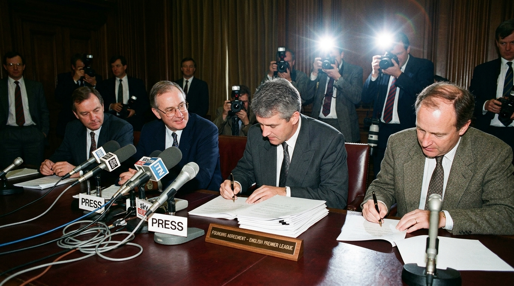
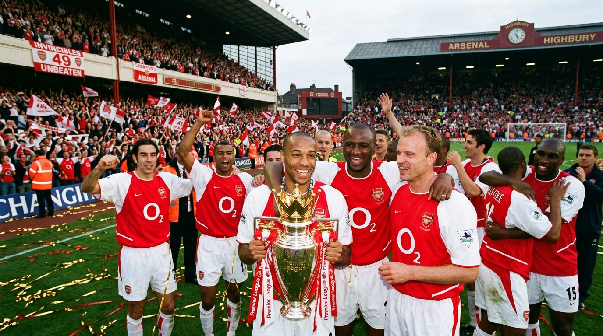
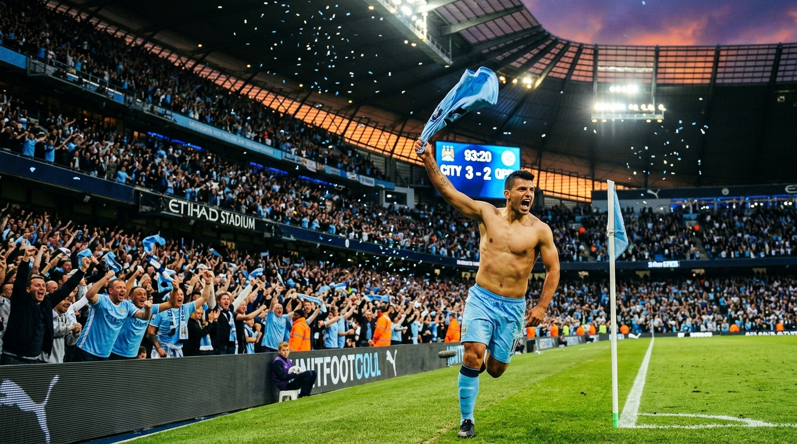

要真正搞懂英超，必須先讀懂英格蘭超過一個半世紀的足球血脈！從 1863 年倫敦共濟會酒館確立《劍橋規則》與英足總誕生、1888 年威廉·麥格雷戈創辦世界第一個職業足球聯賽，到利物浦海瑟爾與希斯堡慘案的至暗時刻，再到 1992 年 22 家豪門在倫敦會議室簽下獨立協議引爆電視版稅革命——這是一部古老工人階級信仰蛻變為全球百億體育帝國的史詩巨作。
取材自【0基礎看足球之聯賽篇】《一個視頻搞懂什麼是英超？》。本專題將影片中提到的英超前世今生、賽制與升降級機制、均富商業運作向上溯源，完整補齊 1863 年現代足球誕生、1888 年世界首個職業聯賽創立、老英甲百年風雲，到 1992 破繭獨立與現代六大豪門爭霸的完整歷史拼圖。
觀看原始影片 ↗英超絕非憑空出世的商業泡沫，它腳下踩著全世界最深厚、超過一個半世紀的足球泥土與工人階級血汗記憶。
1863 年 10 月 26 日，11 家倫敦足球與公學代表齊聚倫敦「共濟會酒館」（Freemasons' Tavern），正式成立英格蘭足球總會（The FA），並頒布史上第一套統一的現代足球規則，將足球（禁止手球與肉搏抱摔）與橄欖球（Rugby）徹底分道揚鑣。
💡 現代體育發源地：足球規則的伊甸園阿斯頓維拉董事威廉·麥格雷戈（William McGregor）厭倦了友誼賽的鬆散無序，號召普雷斯頓、斯托克城、狼隊等 12 支英格蘭中北部球隊，於 1888 年成立世界上第一個職業足球聯賽（The Football League）。隨後首屆冠軍普雷斯頓以不敗戰績完成雙冠王。
💡 世界聯賽之祖：雙循環主客場與升降級起源在長達百年的英格蘭甲組聯賽（Old First Division）中，曼聯的巴斯比寶貝與利物浦香克利、佩斯利打造的紅色帝國（歐冠 4 冠）稱霸歐陸。然而 1980 年代球場老化、海瑟爾慘案致使英格蘭球隊遭歐洲全面禁賽 5 年、希斯堡球場慘案促使《泰勒報告》出爐，逼使英格蘭足球全面拆除站席、擁抱改革。
💡 泰勒報告浴火重生：促成英超破繭而出在 1992 年之前，英格蘭足球深陷球場設施老化、球迷騷亂與歐洲禁賽陰霾。英超的成立，徹底改寫了全世界足球的營運邏輯。
1992 年 5 月，22 家英甲豪門在英足總支持下集體出走脫離舊聯賽（Football League），創立獨立的「英格蘭超級足球聯賽」。英超跳過了舊體制的分潤層層剝削，將轉播權單獨售予默多克的天空電視台（BSkyB），直接將足球從地方工人階級娛樂推向全球衛星直播的頂級秀場。
💡 商業獨立運作：20 家俱樂部均為公司股東不同於西甲過去皇馬與巴薩包攬八成電視轉播費的二元獨吞，英超建立了一套極為均衡的分潤機制：50% 國內版稅均分、25% 依電視轉播場次、25% 依排名獎金，而海外轉播收益更是幾乎全員均分。這意味著即便墊底降級球隊，單季也能分得逾 1 億英鎊收入！
💡 中下游球隊具備財力網羅國腳，無人敢言穩贏英超融合了英倫傳統的身體對抗與高空轟炸，並廣納全球頂尖主帥（瓜迪奧拉、克洛普、溫格、穆里尼奧）帶來的戰術革新。快節奏攻防轉換、判罰尺度開放以及沒有冬歇期的「聖誕-新年魔鬼賽程」，構成了令全世界球迷欲罷不能的足球盛宴。
💡 聖誕節瘋狂加賽：全球唯一不休假的狂歡季每年 8 月至隔年 5 月，20 支球隊展開長達 38 輪主客雙循環死鬥。每一分、每一顆淨勝球，都牽動著價值數億英鎊的命運。
從倫敦會議室的獨立簽署，到阿奎羅讀秒掀衣的伊蒂哈德狂瀾，見證世界第一聯賽的傳奇分水嶺。

1863 起源11 所倫敦俱樂部制定《劍橋規則》，足總正式成立，手球抱摔被禁，現代足球降生。
12 家中北部球會創立「英格蘭足球聯賽」，普雷斯頓雙冠不敗，開創雙循環積分之祖。
22 家頂級俱樂部掌舵人在倫敦簽下歷史性創立協定，現代足球的商業金字塔自此拔地而起。

2004 不敗神話亨利、維埃拉與溫格的海布里傳奇，38 場 26 勝 12 平 0 負，英超官方唯一特製純金獎盃。

2012 絕殺首冠英超歷史最震撼心臟的一秒！落後補時扳平+絕殺，曼城憑淨勝球奪得首座英超金盃。
瓦爾迪連場破門、坎特無處不在、拉涅利淚灑王權球場，譜寫體育史上最浪漫的草根奇蹟。
點擊分類按鈕篩選不同歷史階段與豪門紀元，回顧從 1863 古老規則制定到當代四連霸的波瀾壯闊。
英超不僅有著全球最高水平的球星儲備，更由這六支傳統與新銳力量構築了無可撼動的影響力。
弗格森爵士治下的英超絕對霸主，92 班（貝克漢姆、吉格斯、斯科爾斯等）橫掃英倫，1999 年完成震撼世界的三冠王壯舉。坐擁「夢劇場」老特拉福德球場，全球粉絲基數無人能及。
「教授」溫格將大陸流技術革命與科學飲食引進英倫，以賞心悅目的法式美麗足球征服球迷。2003-04 賽季締造英超唯一的 38 場不敗奪冠，目前在阿爾特塔帶領下掀起強勢的青年復興。
2003 年阿布拉莫維奇收購開啟現代金元足球序幕，穆里尼奧打造鐵血鋼鐵防線（單季僅失 15 球）。隨後在德羅巴、蘭帕德、特里帶領下南征北討，兩度登上歐洲之巔（2012、2021）。
「You'll Never Walk Alone」響徹安菲爾德！英格蘭歐冠奪冠次數最多（6 次）的豪門。克洛普任內掀起高位逼搶的「重金屬足球」風暴，於 2020 年終結長達 30 年的聯賽冠軍荒。
2008 年城市足球集團入主後蛻變為足壇新霸主。2012 阿奎羅 93:20 破荒，2016 瓜迪奧拉接任後建立以極致空間控制與傳控為核心的戰術帝國，更達成單季 100 分與歷史唯一的英超四連冠！
北倫敦另一極，以激情進攻與出產超級射手著稱（如哈里·凱恩、孫興慜）。擁有全歐洲最頂尖的全新現代化專業足球場，在波切蒂諾時代曾闖入歐冠決賽，長年維持強大戰鬥力。
自 1992 年改制以來，在綠茵場上刻下的不可磨滅的歷史之最紀錄。
| 統計項目 | 保持者 / 紀錄球隊 | 數據細節 | 歷史意義 |
|---|---|---|---|
| 英超奪冠次數最多俱樂部 (1992+) | 曼徹斯特聯 (Man United) | 13 座冠軍 | 由弗格森爵士一手締造的紅魔現代全盛盛世 |
| 英格蘭百年頂級聯賽總冠軍 (1888+) | 曼聯 (20次) / 利物浦 (19次) | 合攬 39 座頂級錦標 | 涵蓋老英甲（Football League First Division）與英超的百年雙雄爭霸史 |
| 歷史最高單季積分 | 曼徹斯特城 (2017-18) | 100 分 (Centurions) | 英超 38 輪史上唯一的「百分百分神仙賽季」 |
| 最長跨季不敗紀錄 | 阿森納 (2003-2004) | 49 場不敗 | 包含整季 38 輪不敗奪冠，獲官方授予純金獎盃 |
| 英超歷史總射手王 | 阿蘭·希勒 (Alan Shearer) | 260 球 | 布萊克本流浪者與紐卡斯爾聯的英格蘭傳奇鋒霸 |
| 單季進球紀錄 | 埃爾林·哈蘭德 (Erling Haaland) | 36 球 (2022-23) | 首個英超賽季即打破希勒與科爾保持的 34 球紀錄 |
| 單季失球最少防守神蹟 | 切爾西 (2004-05) | 僅失 15 球 | 穆里尼奧鐵血藍軍、切赫 24 場零封的極限防守壁壘 |
回答 3 個關鍵情境問題，測出你骨子裡更符合哪支英超球隊的氣質與精神！